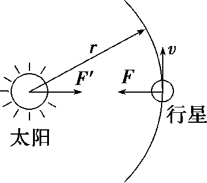

万有引力定律
推导
太阳和行星的质量分别为 M 和 m
\left.\begin{array}{cc} \left.\begin{array}{c} F=m\omega^{2}r\\ \omega=\frac{2\pi}{T} \end{array}\right\} \Rightarrow & F=m\frac{4\pi^{2}}{T^{2}}r\\ & \frac{r^{3}}{T^{2}}=k \end{array}\right\} \Rightarrow F=4\pi^{2}k\frac{m}{r^{2}}
\left.\begin{array}{c} F\propto\frac{m}{r^{2}}\\ F'\propto\frac{M}{r^{2}}\\ F=F' \end{array}\right\} \Rightarrow F\propto\frac{Mm}{r^{2}}

万有引力公式：
万有引力公式
F=G\frac{Mm}{r^{2}}
引力常量
1798 年，卡文迪什利用扭称装置，第一次在实验室里比较准确的测出了引力常量 G 的值。
比例问题
例 1
已知地球的质量为月球质量的 81 倍，地球半径约为月球半径的 4 倍。若在月球和地球表面同样高度处，以相同的初速度水平抛出物体，抛出点与落地点间的水平距离分别为 x_{月} 和 x_{地}，求 x_{月} 和 x_{地}？
列出待比较物理量的表达式；
根据已知物理量的比例关系，写出待比较物理量的比例。
例 2
科学家对 X 星球探索过程中，发现 X 星球与地球的密度之比为 p，X 星球与地球的半径之比为 q，求 X 星球与地球表面的重力加速度之比？
解：
mg=G\frac{Mm}{R^{2}}\Rightarrow g=\frac{GM}{R^{2}}=\frac{4\pi}{3}G\rho R
记 X 星球和地球表面的重力加速度分别为 g_{X} 和 g_{0}，
\frac{g_{X}}{g_{0}}=\frac{\rho_{X}}{\rho_{0}}\frac{R_{X}}{R_{0}}=pq
纬度对重力的影响（考虑地球的自转）
例 1
用弹簧测力计分别在地球两极和赤道上测量一个物体的重力，物体的质量为 m，在两极时弹簧测力计的读数为 F_{1}，在地球赤道上时弹簧测力计的读数为 F_{2}。已知地球半径为 R，求地球自转的角速度。
解：
\begin{cases} G\frac{Mm}{R^{2}}=F_{1} \\ G\frac{Mm}{R^{2}}-F_{2}=m\omega^{2}R \end{cases} \Rightarrow m\omega^{2}R=F_{1}-F_{2}\,\Rightarrow \omega=\sqrt{ \frac{F_{1}-F_{2}}{mR} }
例 2
假设地球可视为质量均匀分布的球体。已知地球表面重力加速度在两极的大小为 g_0，在赤道的大小为 g；地球自转的周期为 T，引力常量为 G。求地球的密度。
解：
\begin{cases} mg_{0}=G\frac{Mm}{R^{2}}=G\rho\frac{4\pi R^{3}}{3}\frac{m}{R^{2}}=G\rho \frac{4\pi}{3}mR \\ mg_{0}-mg=m \frac{4\pi^{2}}{T^{2}}R \end{cases} \Rightarrow\frac{g_{0}}{g_{0}-g}=\frac{G\rho T^{2}}{3\pi}
\Rightarrow \rho=\frac{3\pi g_{0}}{(g-g_{0})GT^{2}}
均匀球壳的万有引力
- 均匀球壳内部的质点受到球壳各部分的万有引力的合力为零。
- 均匀球壳对外部的质点（可视为球壳质量集中于球心）：F=G\frac{m_{1}m_{2}}{r^{2}}
例 1
假设地球是一半径为 R、质量分布均匀的球体。一矿井深度为 d，已知质量分布均匀的球壳对壳内物体的引力为零。求矿井底部和地面处的重力加速度大小之比。
g=\frac{GM}{r^{2}}=G\frac{\rho \frac{4\pi}{3}r^{3}}{r^{2}}\propto r
\frac{g_{井底}}{g_{地表}}=\frac{F_{井底}}{F_{地表}}=\frac{R-d}{R}